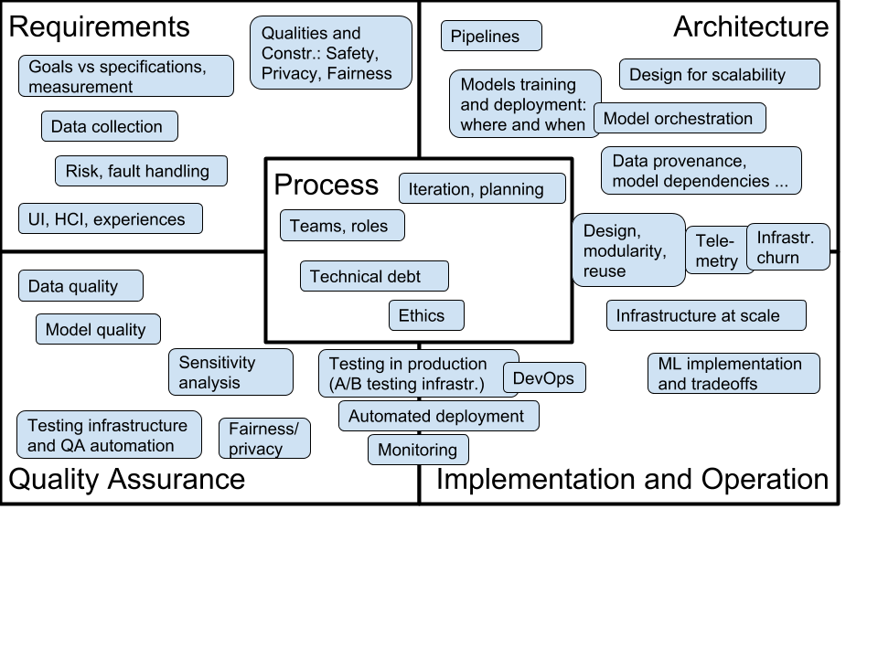

This is the site for the Summer 2020 offering of this course. For the initial Fall 2019 offering with all slides and assignments see F2019 website and F2019 GitHub branch. For the planned Fall 2020 offering see F2020 website and F2020 GitHub branch.
In 2020, the class will be offered both in the Summer term and in the Fall semester. The Summer offering will be more targeted towards students with software engineering experience (e.g., software engineering course, industrial experience, or internship experience), but will expect no data science background. The Fall offering will be targeted more at students with some data science experience (e.g., a machine learning course on campus or online), but will expect no software engineering background.
Due to the COVID-19 pandemic CMU has decided that all summer classes will be taught remotely. See below for specific changes.
For researchers, educators, or others interested in this topic, we share all course material under a creative commons license on GitHub (https://github.com/ckaestne/seai/) and have recently published an article describing the rationale and the design of this course: Teaching Software Engineering for AI-Enabled Systems. We would be happy to see this course or a similar version taught somewhere else. See also an annotated bibliography on the topic.
Course Description
The course takes a software engineering perspective on building software systems with a significant machine learning or AI component. It discusses how to take an idea and a model developed by a data scientist (e.g., scripts and Jupyter notebook) and deploy it as part of scalable and maintainable system (e.g., mobile apps, web applications, IoT devices). Rather than focusing on modeling and learning itself, this course assumes a working relationship with a data scientist and focuses on issues of design, implementation, operation, and assurance and how those interact with the data scientist's modeling.
This course is aimed at software engineers who want to understand the specific challenges of working with AI components and at data scientists who want to understand the challenges of getting a prototype model into production; it facilitates communication and collaboration between both roles.
{kind=link}
Questions
- How can correctness or usefulness of a system with an AI component be specified or evaluated? How to collect requirements for AI-enabled systems?
- How to analyze and mitigate wrong results and how to design robust systems? Is modular design still possible with AI components?
- How and where to deploy models, how and when to update models, and what telemetry to collect? How to design learning and evaluation infrastructure that scales?
- How to compose multiple AI components within a system and detect feedback loops? What does software architecture for AI-enabled systems look like?
- How to detect poor data quality, poor model quality, and data drift? What would unit testing for data look like?
- How to assure quality of an AI-enabled system? How would test automation look like to test correctness of infrastructure or models?
- How to assure fairness and privacy of AI-enabled systems?
Learning Outcomes
After taking this course, among others, students should be able to
- analyze tradeoffs for designing production systems with AI-components, analyzing various qualities beyond accuracy such as operating cost, latency, updateability, and explainability
- implement production-quality systems that are robust to mistakes of AI components
- design fault-tolerant and scalable data infrastructure for learning models, serving models, versioning, and experimentation
- ensure quality of the entire machine learning pipeline with test automation and other quality assurance techniques, including automated checks for data quality, data drift, feedback loops, and model quality
- build systems that can be tested in production and build deployment pipelines that allow careful rollouts and canary testing
- consider privacy, fairness, and security when building complex AI-enabled systems
- communicate effectively in teams with both software engineers and data analysts
In addition, students will gain familiarity with production-quality infrastructure tools, including stream processing with Apache Kafka, distributed data storage with SQL and NoSQL databases, deployment with Docker and Kubernetes, and test automation with Travis and Jenkins.
Design Rationale
- Data scientists often make great progress at building models with cutting edge techniques but turning those models into products is challenging. For example, data scientists may work with unversioned notebooks on static data sets and focus on prediction accuracy while ignoring scalability, robustness, update latency, or operating cost.
- Software engineers are trained with clear specifications and tend to focus on code, but may not be aware of the difficulties of working with data and unreliable models. They have a large toolset for decision making and quality assurance but it is not obvious how to apply those to AI-enabled systems and their challenges.
- To what degree can existing SE practices be used for building intelligent systems? To what degree are new practices needed?
- This course adopts a software engineering perspective on building intelligent systems, focusing on what a software engineer can do to turn a machine learning idea into a scalable and reliable product. Rather than focusing on modeling and learning itself, it assumes a working relationship with a data scientist and focuses on issues of design, implementation, operation, and assurance and how those interact with the data scientist's modeling.
- The course will use software and systems engineering terminology and techniques (e.g., test coverage, architecture views, fault trees) and make explicit transfers to challenges posed by using machine learning/AI components. The course will not teach fundamentals of machine learning or AI, but will assume a basic understanding of relevant concepts (e.g., feature engineering, linear regression vs fault trees vs neural networks). It will heavily train design thinking and tradeoff analysis. It will focus primarily on practical approaches that can be used now and will feature hands-on practice with modern tools and infrastructure.
Logistics and People
17-445/17-645, 12 Units
Open to undergraduate and graduate students meeting the prerequisites.
The summer 2020 offering targets students with a software engineering background (see prerequisites below)
Lectures: Tuesday+Thursday 3-4:20pm, online via zoom
Recitation: Wednesday 12:30-1:50pm, online via zoom
Instructor: Christian Kaestner
TA: Shreyans Sheth
Office Hours: after each lecture
Coordination
We use Canvas for announcements and discussions. Send us an email if you have any questions. I will always stick around after class to answer questions and am happy to move to a private channel if you request so.
Course content
The course content evolves from semester to semester. See the course content of the Fall 2019 semester to get an overview and have a look at our Learning Goals. Below is a table of the current planned schedule. Of of this is subject to change and will be updated as the semester progresses, especially to help focus on requested topics or support learning.
Schedule (Preliminary schedule, subject to change)

Course Syllabus and Policies
The course uses Canvas for posting slides, readings, and videos, for discussions, for quizzes, announcements, and supplementary documents; Gradescope (linked from Canvas) is used for homework submissions and grading; GitHub is used to coordinate group work.
Prerequisites: Offerings in different semesters may be targeted at students with different backgrounds. The course does not have formal prerequesites, but we describe background knowledge that will help you be successful in the course. Also note that the course always has a substantial programming component, so solid programming skills will be benefitial (we do not prescribe a programming language, but most student teams decide to work primarily in Python).
Summer 2020: We expect basic exposure to software engineering, but do not require machine learning skills. We suggest that you have a basic familiarity with using version control, gathering requirements, software design and modeling, testing and test automation. Courses 17-313, and 17-654, 17-655 will prepare you well, but you may also have prerequisite software engineering knowledge from other courses or practical work experience, including software-engineering-heavy internships. The Summer 2020 offering will include a crash course on machine learning in the first two weeks. Basic familiarity with Python will be useful.
We have set up a prerequisite knowledge check in the course's Canvas repository, where we ask 10 questions on software engineering, which help you assess your background. This is set up as an ungraded quiz, where you can compare your knowledge against what we believe is useful for you to be successful in this course. The system will give specific pointers to readings and exercises that may help you fill gaps in background knowledge. Email us (se-ai@lists.andrew.cmu.edu) if you would like access to this check before signing up for the course or if like to talk to us about prerequisites.
Remote teaching: As per CMU policy, the summer 2020 offering of this course will be taught remotely. As other software engineering courses, in-class discussions (e.g., about tradeoffs, case studies, and policies) are an important part of the learning experience. We will attempt to mirror an in-person lecture experience to a large degree and we will continue to ask student teams to regularly meet and work with their team members virtually.
You will need a stable internet connection, a working audio setup, and a webcam. An external monitor is likely useful. We expect to the following format (though we may make adjustments throughout the semester):
- We ask students to attend class via Zoom “live” rather than relying on recordings.
- We ask students to keep their camera on during class, because it provides a less anonymous and isolated experience and provides some feedback for the presenter.
- We ask students to be able to participate in in-class discussions and in-class exercises through audio and through chat messages – see also participation grading below.
- We will have an open-book midterm during a lecture timeslot and project/homework presentations over Zoom.
- We promise to never use any proctoring or attention-checking tools. Live participation and turned on cameras are there to create a better and more inclusive learning experience, not to spy on you or force you to pay attention.
If you need accommodations, we try to be as flexible as we can in this difficult situations, please talk to us.
Participation: Software engineering content requires active engagement with the material and discussions of judgment decisions on specific scenarios and cases. We strongly believe in in-class discussions and in-class exercises and want all students to participate, e.g., answering or asking questions in class through chat or audio, sharing own experiences, presenting results in recitation, or participating in in-class votes and surveys. We take notes on participation throughout the semester and grade participation (the participation component is 10% of the grade and we use the full scale, so it can make up to a letter-grade difference in the overall grade). Note that we do not consider mere passive presence as participation, but only active engagement. While teaching remotely, we’ll give a 10% bonus on the participation grade for keeping a camera turned on during class. We will provide feedback at mid-semester so you can check in on how you’re doing. Again, please talk to us if you need accommodations.
Teamwork: Teamwork is an essential part of this course. Several assignments and a final project are done in teams of 3-5 students. Teams will be assigned by the instructor and stay together for multiple assignments and a final project. A team policy posted on Canvas applies and describes roles and teams and how to deal with conflicts and imbalances. Peer rating will be performed for team assignments with regard to team citizenship (i.e., being active and cooperative members), following the procedure from this article.
Communication: We make announcements through Canvas and use Canvas also for discussions, including clarifying homework assignments and other interactions. The instructors and TAs hold virtual office hours and are reachable by email; see above for information on how to contact us. Email them for additional appointments.
Textbook: We will be using Goeff Hulten's *"Building Intelligent Systems: A Guide to Machine Learning Engineering"* (ISBN: 1484234316) throughout much of the course. The library provides an electronic copy. In addition, we will provide additional supplementary readings, including blog posts and academic papers, throughout the semester.
Grading: Evaluation will be based on the following distribution: 35% individual assignments, 20% midterm, 30% group project, 10% participation, 5% reading quizzes.
Time management: This is a 12-unit course, and it is our intention to manage it so that you spend close to 12 hours a week on the course, on average. In general, 4 hours/week will be spent in class and 8 hours on reading and assignments. Notice that some homework is done in groups, so please account for the overhead and decreased time flexibility that comes with groupwork. Please feel free to give the course staff feedback on how much time the course is taking for you.
Late work policy: Late work in individual assignments will be accepted with a 10% penalty per day, for up to 3 days. Late work in group assignments will receive feedback but no credit. Exceptions to this policy will be made at discretion of the instructor in important circumstances, almost always involving a family or medical emergency — you can ask your academic advisor or the Dean of Student Affairs requesting the exception on your behalf. Accommodations for travel (e.g., for interviews) might be possible if requested in advance. For accommodations related to remote teaching, we try to be flexible: please contact the instructor. Please communicate also with your team about potential timing issues.
Writing: Describing tradeoffs among decisions and communication with stakeholders from other backgrounds are key aspects of this class. Many homework assignments have a component that requires discussing issues in written form or reflecting about experiences. To practice writing skills, the Global Communications Center (GCC) offers one-on-one help for students, along with workshops. The instructors are also happy to provide additional guidance if requested.
Academic honesty and collaboration: The usual policies apply, especially the University Policy on Academic Integrity. Many assignments will be done in groups. We expect that group members collaborate with one another, but that groups work independently from one another, not exchanging results with other groups. Within groups, we expect that you are honest about your contribution to the group's work. This implies not taking credit for others' work and not covering for team members that have not contributed to the team. Otherwise, our expectations regarding academic honestly and collaboration for group work are the same as for individual work, substituting elevated to the level of "group." The rest of this academic honesty and collaboration content is taken from the policy used in 15-214, which we reuse almost directly (with minor modifications, and attribution). "You may not copy any part of a solution to a problem that was written by another student, or was developed together with another student, or was copied from another unauthorized source such as the Internet. You may not look at another student's solution, even if you have completed your own, nor may you knowingly give your solution to another student or leave your solution where another student can see it. Here are some examples of behavior that are inappropriate:
- Copying or retyping, or referring to, files or parts of files (such as source code, written text, or unit tests) from another person or source (whether in final or draft form, regardless of the permissions set on the associated files) while producing your own. This is true even if your version includes minor modifications such as style or variable name changes or minor logic modifications.
- Getting help that you do not fully understand, and from someone whom you do not acknowledge on your solution.
- Writing, using, or submitting a program that attempts to alter or erase grading information or otherwise compromise security of course resources.
- Lying to course staff.
- Giving copies of work to others, or allowing someone else to copy or refer to your code or written assignment to produce their own, either in draft or final form. This includes making your work publicly available in a way that other students (current or future) can access your solutions, even if others' access is accidental or incidental to your goals. Beware the privacy settings on your open source accounts!
- Coaching others step-by-step without them understanding your help. If any of your work contains any statement that was not written by you, you must put it in quotes and cite the source. If you are paraphrasing an idea you read elsewhere, you must acknowledge the source. Using existing material without proper citation is plagiarism, a form of cheating. If there is any question about whether the material is permitted, you must get permission in advance. We will be using automated systems to detect software plagiarism. It is not considered cheating to clarify vague points in the assignments, lectures, lecture notes; to give help or receive help in using the computer systems, compilers, debuggers, profilers, or other facilities; or to discuss ideas at a very high level, without referring to or producing code. Any violation of this policy is cheating. The minimum penalty for cheating (including plagiarism) will be a zero grade for the whole assignment. Cheating incidents will also be reported through University channels, with possible additional disciplinary action (see the above-linked University Policy on Academic Integrity). If you have any question about how this policy applies in a particular situation, ask the instructors or TAs for clarification." Note that the instructors respect honesty in these (and indeed most!) situations.
Accommodations for students with disabilities: If you have a disability and have an accommodations letter from the Disability Resources office, we encourage you to discuss your accommodations and needs with us as early in the semester as possible. We will work with you to ensure that accommodations are provided as appropriate. If you suspect that you may have a disability and would benefit from accommodations but are not yet registered with the Office of Disability Resources, we encourage you to contact them at access@andrew.cmu.edu.
A note on self care. Please take care of yourself. The current pandemic and the remote setting makes things so much more challenging. Do your best to maintain a healthy lifestyle this semester by eating well, exercising, avoiding drugs and alcohol, getting enough sleep and taking some time to relax. This will help you achieve your goals and cope with stress. All of us benefit from support during times of struggle. You are not alone. There are many helpful resources available on campus and an important part of the college experience is learning how to ask for help. Asking for support sooner rather than later is often helpful. If you or anyone you know experiences any academic stress, difficult life events, or feelings like anxiety or depression, we strongly encourage you to seek support. Counseling and Psychological Services (CaPS) is here to help: call 412-268-2922 and visit their website at http://www.cmu.edu/counseling/. Consider reaching out to a friend, faculty or family member you trust for help getting connected to the support that can help.
Related Courses
- 17-640 IoT, Big Data, and ML: A hands-on class building an IoT system with a significant machine learning component. This course is more focused on embedded devices and IoT and focuses on a specific scenario where machine learning is used, whereas we survey software engineering challenges across AI-enabled systems more broadly.
- 17-649 Artificial Intelligence for Software Engineering: This course focuses on how AI techniques can be used to build better software engineering tools and goes into more depth with regard to specific AI techniques, whereas we focus on how software engineering techniques can be used to build AI-enabled systems. Our application scenarios are typical web-based systems for end users, rather than tools for software developers.
- 17-646 DevOps: Modern Deployment, 17-647 Engineering Data Intensive Scalable Systems, and similar: These course cover techniques to build scalable, reactive, and reliable systems in depth. We will survey DevOps and big data systems (e.g., batch processing, stream processing), but will not explore them in as much detail as a dedicated course can.
- 10-601 Machine Learning, 15-381 Artificial Intelligence: Representation and Problem Solving, 05-834 Applied Machine Learning, 95-865 Unstructured Data Analytics, and many others: CMU offers many course that teach how machine learning and artificial intelligence techniques work internally and how to apply them to specific problems (including feature engineering and model evaluation), often on static data sets. We assume a basic understanding of such techniques and processes (see prerequisites) but focus on the engineering process for production online systems.